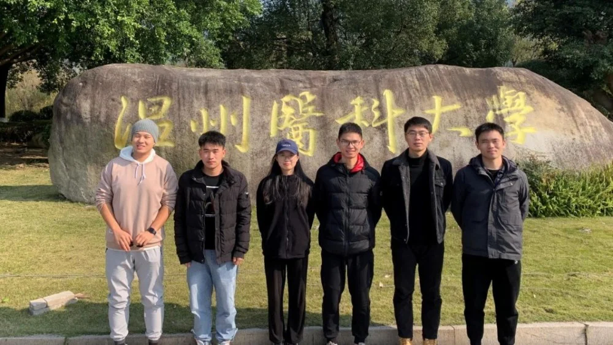
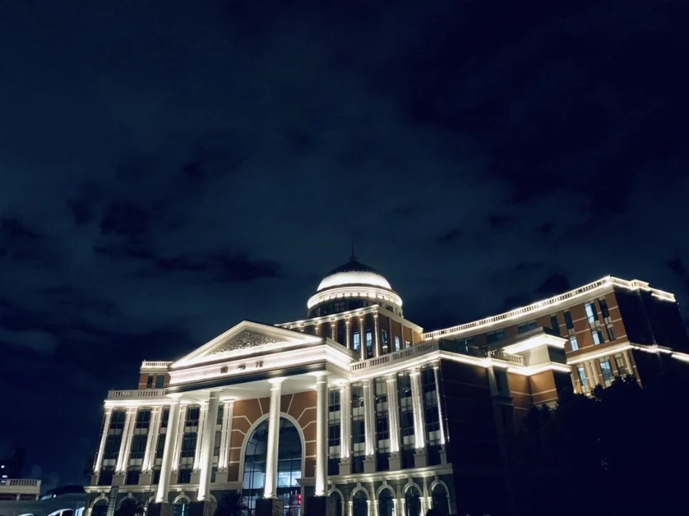
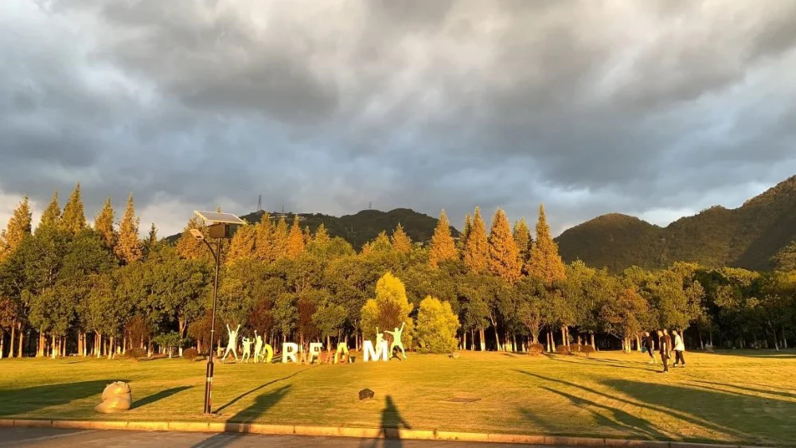
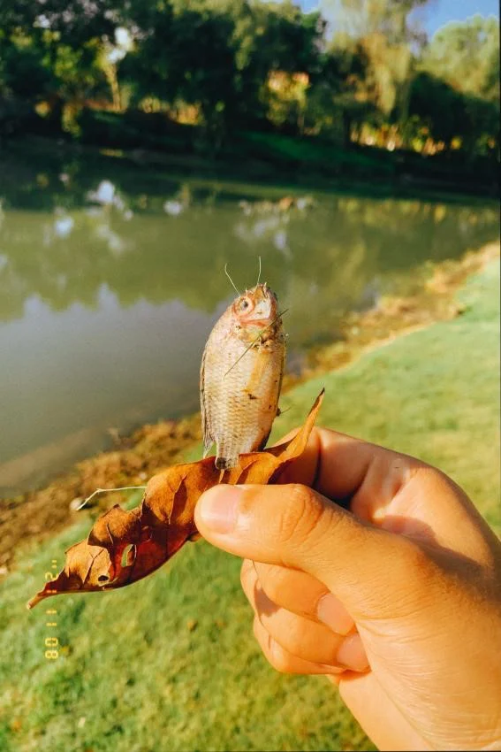
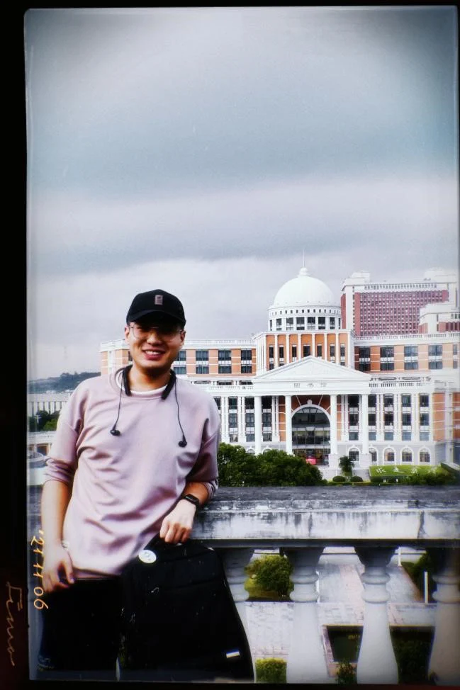
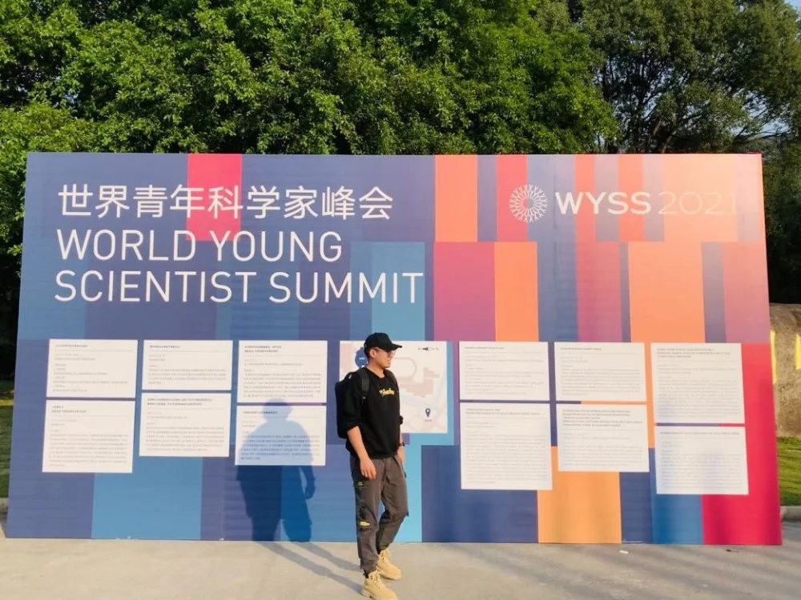
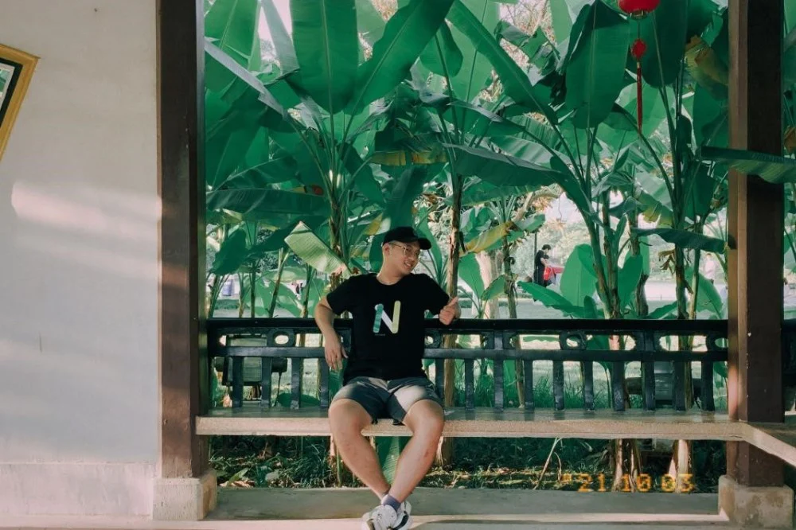
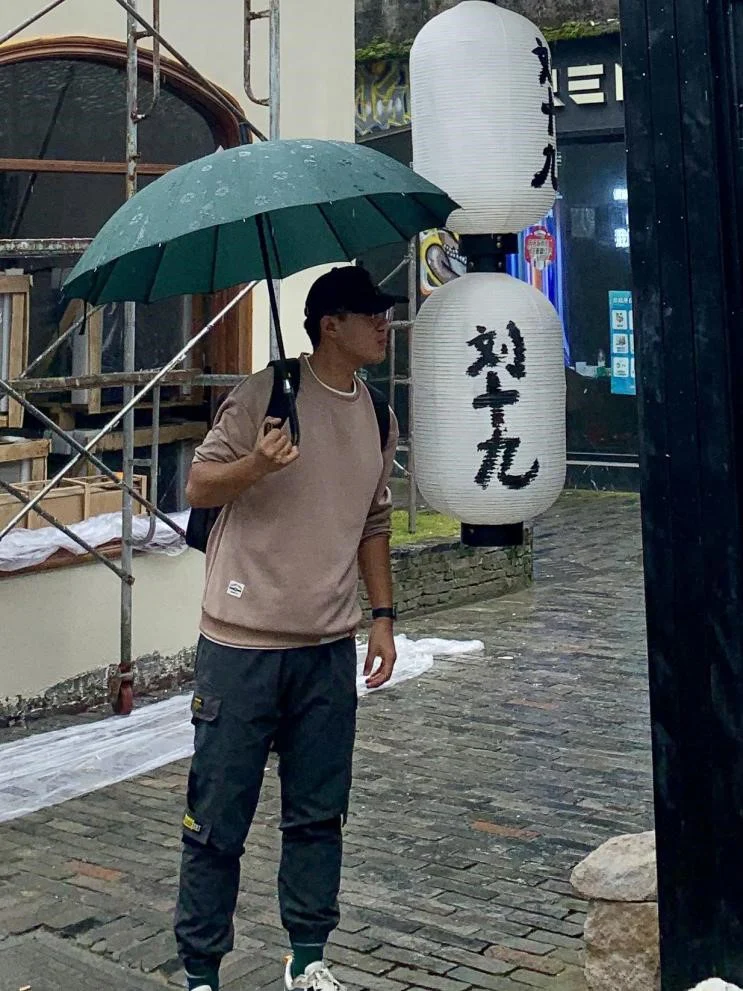

温医的生活，朴实无华且枯燥
我是iMED团队的中科院宁波材料所与温州医科大学的合培生。入学后在温州医科大学生活学习半年，之后的两年半将在组内度过。这是我们团队21温医所有成员。

合照 （左起）刘守岳，徐克意，毛海婷，熊洲炜，陈涛，王兴国。
都是第一次上研究生，没有什么经验，来到学校之后总得干点嘛。除了看，就是玩，毕竟这个校园太美了。
温医有个特别好看的图书馆，长这样：
夕阳3300K的光线混搭着温州南海岸七彩的风，吹洒在下午5点08分的温医图书馆上，一切显得静谧而优雅。白色大理石柱笔直挺拔，整栋建筑金光闪闪，与其中的百万典藏一同凝固在此刻。
晚上长这样：

夜间模式的图书馆在白色射灯的帮助下，如雕栏玉砌，流光溢彩。
学校美丽的风景：

11月8号，我经过一片草地，随手拍下了这张。摇摇欲坠的积雨云，两个小时后打湿了远山的里里外外。
日子就得慢慢的磨，细细的磨，总能磨出些许墨香来。
我喜欢坐在河边看书喝咖晒太阳，偶尔也能有些小发现。前半句只有喝咖晒太阳是真的，因为河边有狗子玩，有猫猫，有鸟雀，有抱着鲜花的姑娘和擦汗的男人。生活碎片，洋洋洒洒，布满了这个百尺有余的小河边。我在这里看的不是书，又似乎是书，随着光影日落一页一页翻着。

在河边晒太阳时发现的小鱼干，不知哪只猫弄丢了它。
我的日常就是学习和运动，基本上在教学楼、宿舍楼、体育场，三点一线，来来回回拉扯着。我和朋友们都特喜欢运动，一有空便打球。一天二十四小时，基本上全是空。
上研究生之前，我不怎么运动。可哥几个个个是健身专家，一个愿意带，一个愿意学，然后我瘦了20斤。
赶上了篮球赛，我们iMED承包了宁波院区篮球队的半壁江山。

我和图书馆的合影。那天朋友新到一台尼康，邀请我帮他试试镜。

2021年，温医还举办了世界青年科学家峰会。
在温州短暂的时光，我走了很多地方，看了很多面孔，尝了不同味道的菜，遇见了一群不一样的朋友，他们各有神通，教我去怎么热爱生活。

我在温州江心屿，秀色可餐！

我在小茶坊音乐小镇，美不胜收！
我在大罗山龙脊观景台，快哉快哉！
此间乐，不思蜀，朴实无华且枯燥。希望以后在宁波的日子，能让我玩出花样，玩出精彩。
作者：刘守岳